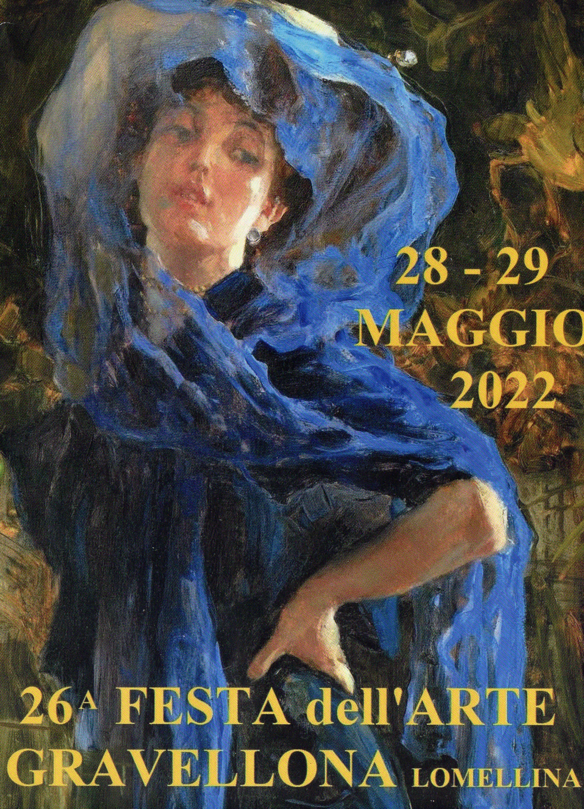
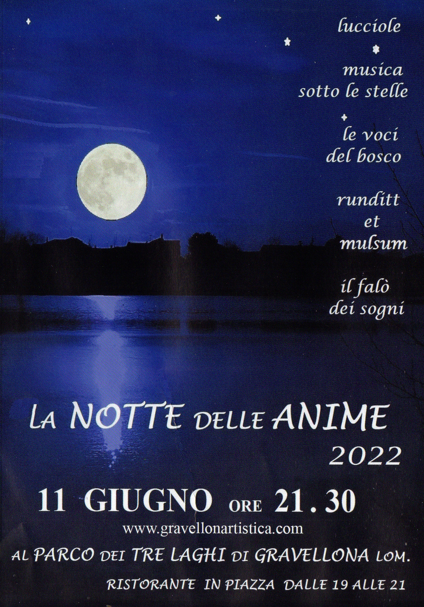
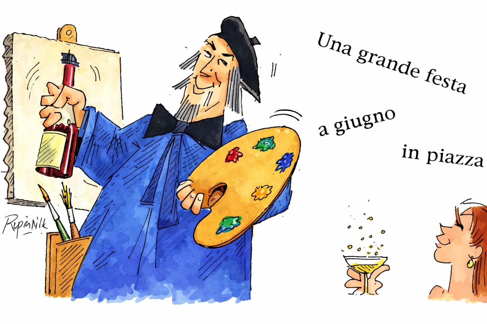

Le locandine e i manifesti delle edizioni. Le locandine delle edizioni dal 1996 al 2007 e del 2010 sono locandine ricomposte (mosaico dei fotogrammi) dallo storico delle locandine nel video «FESTA DELL'ARTE Edizione 2012» del canale @niktuberto1 (Elisabetta Bevilacqua): qualità bassa, in attesa delle versioni ufficiali. Se hai le locandine ufficiali, mandacele.
Delle prime edizioni restano soprattutto le opere dipinte nel paese: il Libro d'arte all'aperto — i murales di Gravellona Lomellina — nella galleria fotografica del Comune: Comune di Gravellona Lomellina.
La primissima Festa dell'Arte, il 17-18 giugno 1995: «Una grande festa a giugno in piazza». Disegno di Regianini con scritta, usato come header dell'archivio; dallo stesso storico delle locandine; la locandina 1995 «di Gravellona e Barbavara», ricomposta dallo scorcio del video.
8-9 giugno 1996. Locandina ricomposta dallo storico delle locandine (@niktuberto1).
3ª edizione, 7-8 giugno 1997; tema «Medio Evo: San Giorgio combatte contro il drago» e «XX Secolo: l'uomo libero incontra la burocrazia e gli altri mostri». Locandina ricomposta dallo storico delle locandine.
4ª edizione, 6-7 giugno 1998. Locandina ricomposta dallo storico delle locandine.
5ª edizione, 4-5-6 giugno 1999. Locandina ricomposta dallo storico delle locandine.
6ª edizione, 3-4 e 10-11 giugno 2000. Locandina ricomposta dallo storico delle locandine.
7ª edizione, sabato 2 – domenica 3 e sabato 9 – domenica 10 giugno 2001; convegno «Bellezza Natura Arte come fattori di sviluppo economico». Locandina ricomposta dallo storico delle locandine.
8ª edizione, giugno 2002. Locandina ricomposta dallo storico delle locandine.
9ª edizione, da sabato 31 maggio a domenica 8 giugno 2003. Locandina ricomposta dallo storico delle locandine.
10ª edizione, sabato 5 – domenica 6 e sabato 12 – domenica 13 giugno 2004. Locandina ricomposta dallo storico delle locandine.
11ª edizione, sabato 4 – domenica 5 e sabato 11 – domenica 12 giugno 2005. Locandina ricomposta dallo storico delle locandine.
12ª Festa dell'Arte e dell'Artigianato Creativo, 2-3-4 e 10-11 giugno 2006. Locandina ricomposta dallo storico delle locandine.
13ª edizione, sabato 2 – domenica 3 e sabato 9 – domenica 10 giugno 2007: «il paese dove arte, natura e fantasia crescono ogni anno». Locandina ricomposta dallo storico delle locandine.
Manifesto ufficiale della 14ª Festa dell'Arte (31 maggio – 1 e 2 giugno, 7 e 8 giugno 2008) a Gravellona Lomellina, in quattro pagine: copertina, «In piazza», «Parco dei 3 Laghi e Giardino Barbavara» e «Alla sera in piazza». Immagini restaurate con Gemini.
Sagome di zebre per il paese e secondo Concerto Ambientale in Villa Barbavara. Locandina dal blog Concertodautunno di Mario Mainino.
16ª edizione, 29-30 maggio e 1-2 giugno 2010, con festa celtica. Locandina ricomposta dallo storico delle locandine (@niktuberto1).
17ª Festa dell'Arte con Festa Celtica (1–5 giugno 2011): mongolfiera-elefante di Libero, voli in elicottero, salvataggio in acqua con cani Terranova, raduno Vespa e Concerto Ambientale. La copertina ufficiale è la terza pagina del volantino in tre pagine, qui ritagliata a parte.
Edizione dell'avvio di Art'è, il libro d'arte all'aperto con le riproduzioni dell'Ottocento. Il 9 giugno, nel cortile del municipio, il concerto «Il valzer: dall'operetta alla canzone… ripensando la Belle Époque» dell'Accademia Quartet: Fabio Baldina al pianoforte, con Daniela Stigliano (soprano) ed Ennio Bellani (tenore). Manifesto firmato «Libero 2012», dal sito di Fabio Baldina (fabiobaldina.com). Le due locandine ufficiali (tema e date) sono ricavate dal video promozionale «PROMO Festa dell'Arte 2012» di NICOLA BIO, in cui scorrono: sono state ricomposte fotogramma per fotogramma; la versione «date» risulta tagliata in basso.
19ª edizione, 1-2 e 8-9 giugno 2013. Fotogramma dal video «Decennale San Pessimino 2003-2013» (@niktuberto1), in cui il volantino è ripreso di sbieco: qualità bassa.
L'Art'è cresce lungo via Marconi e i cartelli di benvenuto di Libero Greco accolgono i visitatori; le serate sono a ritmo di swing e Lindy Hop con i Milanoans.
L'anno degli ombrelli, installazione temporanea sopra le vie del paese. Sul palco lo swing di Paradisum e Sugar Pie & The Candymen, gli ottoni dei Maxentia Brass e il Bubble Football; la sera la Notte delle Anime.
Tornano gli ombrelli, con la mostra di Ko Thea Dallosta, il quindicesimo Concerto Ambientale e la sfilata di Camelia.
Reportage fotografico della 22ª edizione — la festa, il concerto ambientale, la mostra di Ko Thea e la sfilata, con oltre cento immagini del 12 giugno 2016: Concertodautunno di Mario Mainino.
Le fotografie sono dell'autore: cita copyright concertodautunno di Mario Mainino.
L'anno della bicicletta, con il grande biciclettone e la pista ciclabile verso Vigevano. Locandina e programma dal blog Concertodautunno di Mario Mainino.
Edizione medievale, con la presentazione del progetto Monforte della Palude, il borgo altomedievale. In programma anche la Notte delle Anime.
Art'è e Monforte insieme, con un programma pieno di arte, musica, cucina e degustazioni.
Il ritorno in piazza dopo gli anni della pandemia, con la Notte delle Anime a fare da cornice.
Festa al Parco Tre Laghi con il primo Trilagòn, il biathlon con le angurie.
L'anno dei gatti, con i manifesti di Marina che invitano in paese tra cantine, concerti e dj set.
Mousiké, l'arte delle Muse: mostre, sfilata di Spose e Fiori e concerti per tre giorni di festa.
Edizione speciale, con l'inaugurazione del Museo della Bicicletta Geddo, MARPHILL e la Caccia all'Arte.
Evento legato alla Festa dell'Arte: esposizione dei manifesti della Repubblica di Weimar.
Mostra Mercato dei Fiori e del Verde al Parco dei Tre Laghi. Non è la Festa dell'Arte ma evento collegato: 2–3 maggio 2015 e 30 aprile – 1 maggio 2016.